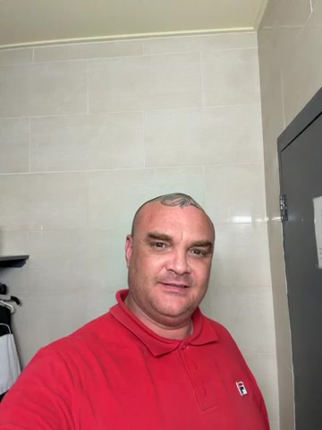

DEMO v2 ONLY — AI-regenerated per board feedback. Not posted yet.
SNAAA-43 follow-up
Founder video — revised AI demo
Per board rejection: suit, clean-shaven look, and confident voiceover
explaining what Snakeoil Enterprises sells and does. AI-regenerated portrait
plus professional narration — review before any website or social posting.
Source
What you uploaded

360×480 portrait selfie in tiled room
Casual red polo; room clutter visible
Audio has room echo; delivery can be tightened
Revised v2
AI-regenerated founder reel
AI portrait: navy suit, clean-shaven, studio backdrop
Confident AU voiceover explaining products and services
9:16 format with Snakeoil lower-third (watermarked demo)
Audio pass
Cleanup preview (no graphics)
Isolated technical cleanup so you can judge sound and picture quality.
Wardrobe & presence
Professional finish (after approval)
Option A (fast): Keep take; polish background, audio, and graphics as shown.
Option B (recommended): Quick re-shoot in navy blazer, plain wall or branded backdrop.
Option C: Virtual wardrobe + studio background replacement on approved take.
Confident delivery: tighten pacing, remove filler pauses, and optionally
add a crisp closing line with subtle room-tone bed under VO.
If approved — where it posts
Website founder section (mock)
Benny "The Snake" Sorensen
Founder & Owner
Replaces static SVG portrait with a muted-loop founder reel on
snakeoil-enterprises homepage + LinkedIn/TikTok 9:16 cutdown.
Script polish
Proposed confident VO (edit to your words)
I'm Benny "The Snake" Sorensen — founder of Snakeoil Enterprises.
We research underserved markets, ship mobile apps and software fast,
and promote daily until the product wins.
If you have a gap in your market, we build the proof and sell until
the world listens. Let's talk.